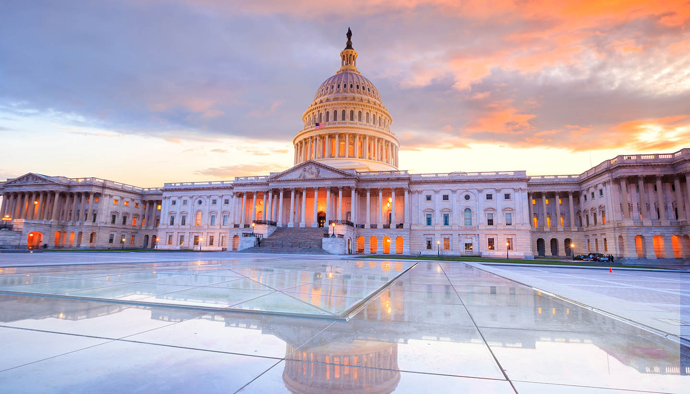

Lying at the northwestern corner of the 48 conterminous states, it is bounded by the Canadian province of British
Columbia to the north, the U.S. states of Idaho to the east and Oregon to the south, and the Pacific Ocean to the west.
The capital is Olympia, located at the southern end of Puget Sound in the western part of the state. The state’s coastal location and excellent harbours give it a leading
role in trade with Alaska, Canada, and countries of the Pacific Rim. Washington cities have sister cities in several countries, and their professional and trade associations
commonly include Canadian members.
| Elected Officials | Tourist Spots |
|
|
Reference:
https://www.britannica.com/place/Washington-state
Go back to Map Page